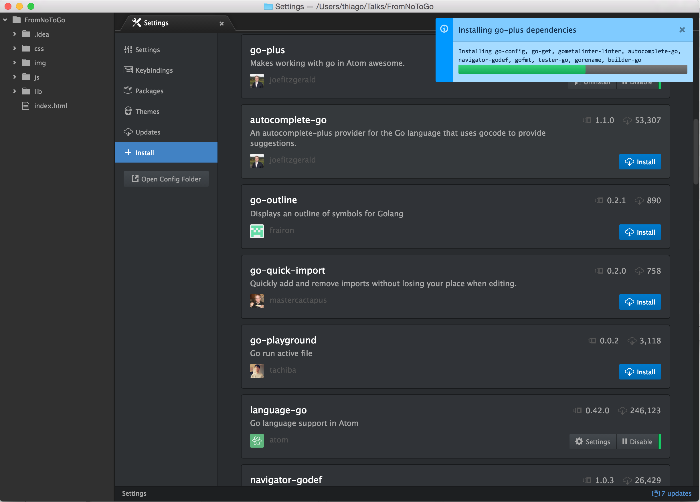

From `No` to `Go`...
Una historia de casi amor, por Thiago CostaGo
expressive, concise, clean, and efficient
package main
import "fmt"
func main() {
fmt.Println("Hello, 世界")
}Oe! Soy la rata flaite de Go
y hoy vamo a habla un poco de esa weá
Así que agarrense nomá en la silla
y al tiro van dejar de ser weones

Cosas buenas para tener en cuenta antes de empezar
- Elige un IDE
- Instala el (posiblemente ya existente) plugin de Go para tu IDE de preferencia
- Instala Go
Elige un IDE
KISS / no brainer choice: Atom

Instala el plugin de Go para tu IDE de preferencia
Go-Plus (para Atom)

Instala Go
Para MacOs
sh-3.2$ brew install goElla, la mac...
el XP con los guacho
en la local, weón, no la pongai en /bin
Para Windows: Baja el MSI desde aquí
Para distros linux, baja el binario y extrae en tu carpeta local
Setea tu ambiente
Go espera que tu ambiente esté seteado
de la siguiente forma
de la siguiente forma
$GOPATH
\src
\.. # Todos tus proyectos
\pkg
\.. # Los paquetes que has instalado
\bin
\.. # Los binarios que fueron compilados de tus proyectosOhh, la weá cuática...
La temida GOPATH
Según la documentación de Go:
The GOPATH environment variable specifies the location of your workspace. It is likely the only environment variable you'll need to set when developing Go code.
Ohh, que le poní color a la weá...
Consejo de amigo
Usa direnv => http://direnv.net/
y carga eso en tu archivo .envrc
donde vayas a trabajar en Go
donde vayas a trabajar en Go
export GOPATH=$(pwd)/mi_super_proyecto_piola
export PATH="$PATH:$GOPATH/bin"Y ahora, algo de Go...
Pausa para respiración
Lee desde un archivo y hace un http post a un servicio X
Pero aweonao, eso es Ruby...
Comparando
La hora de la verdad

Conclusiones
(agradables)Lenguaje robusto
Más que production ready
Sintax agradable
Amplia librería
Conclusiones
(no tan agradables)[pero discutibles]"Setup" no intuitivo al lado de otros lenguajes como Perl, Python o Ruby
Documentación aun luce caótica
Falta de una herramienta de desarrollo de soporte (IDE, REPL [nativo])
Bottomline
Referencias:
golang.org/doc/learnxinyminutes.com/docs/go
www.google.com/?q=css+how+to+align+elements+horizontaly
Gracias
La presentación la puedes ver en arroadie.github.io/FromNoToGo
y revisar / bajar / forkear en github.com/arroadie/FromNoToGo bajo la WTFPL
y revisar / bajar / forkear en github.com/arroadie/FromNoToGo bajo la WTFPL